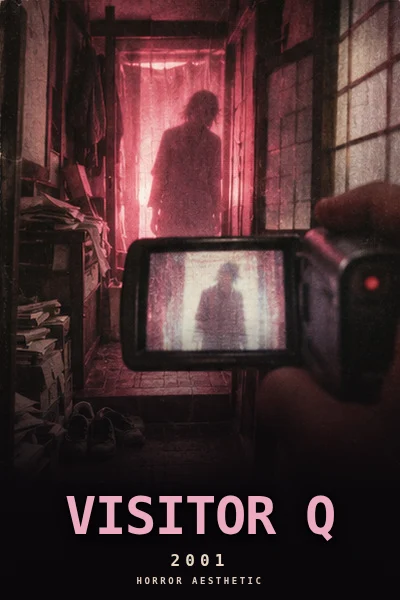

Посетитель QVisitor Q (2001)
Режиссёр: Такаси Миикэ · J-Horror, Чёрная сатира, ЭкстримDirector: Takashi Miike · J-Horror, Black satire, Extreme
⚠ Табуированные темыTaboo subject matter
Чужак бьёт отца камнем по голове, и семья вдруг начинает жить иначе.A stranger hits a father on the head with a rock, and the family suddenly starts living differently.
Отец снимает передачу о подростках и приводит домой хаос. Появляется незнакомец, бьёт его камнем по голове и становится частью семьи. Всё, что дальше случается в этом доме, вызывает у зрителя смесь смеха и отвращения.
Миикэ снимал картину на цифровую камеру для телесерии, и эта дешёвая, почти документальная картинка идёт в паре с гротескным материалом. Нестабильность кадра делает происходящее ещё тревожнее.
Фильм задуман как чёрная сатира: семья разрушена насилием, телевидением и привычкой не замечать друг друга. Он нарочно нарушает табу, чтобы показать, насколько пусты привычные роли.
Эта картина для зрителя, который готов к самым грубым ходам и ищет в них смысл. Остальным лучше начать с «Прослушивания».
A father is making a TV piece about teenagers and brings chaos home. A stranger appears, hits him on the head with a rock, and becomes part of the family. Everything that follows in the house makes the viewer laugh and recoil at once.
Miike shot the picture on a digital camera for a TV series, and that cheap, almost documentary look sits side by side with grotesque material. The unsteady frame makes it even more unsettling.
The film is conceived as a black satire: a family wrecked by violence, television and the habit of not noticing one another. It breaks taboos on purpose to show how empty the usual roles are.
This picture is for viewers ready for the roughest turns who look for meaning in them. Everyone else should start with Audition.